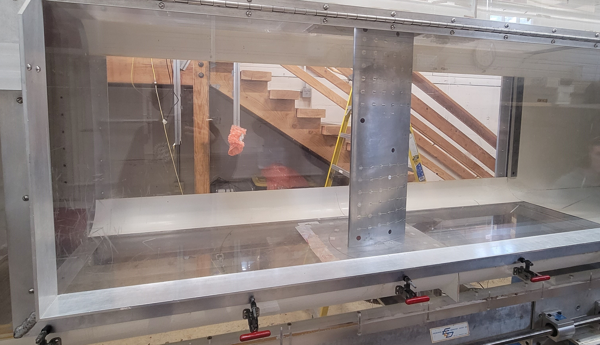

Aerospace Laboratory I

- This experiment investigates drag on bluff bodies, analyzing its variation with Reynolds number using a 3’ x 3’ wind tunnel. Tests include a balance fairing, 5-inch disk, 5-inch sphere, large trip ring, and small trip ring. Results show a clear relationship between drag coefficient and Reynolds number for different body shapes, with notable drag buckets. Considerations for errors in measurements are discussed, and the study provides insights for sports ball design.
𝑝𝑓𝑟𝑜𝑛𝑡 = Pressure on the front surface
𝑝𝑏𝑎𝑐𝑘 = Pressure on the back surface
𝜌 = Density
𝑉 = Velocity
𝐿 = Length
𝜇 = Viscosity
𝐹𝑑 = Drag Force
𝐴 = Reference Area
𝐶𝐷 = 𝐹𝑑 / (1/2 * 𝜌 * 𝑉^2 * 𝐴)
𝑅𝑒 = (𝜌 * 𝑉 * 𝐿) / 𝜇
𝐶𝑝 = (𝑝𝑓𝑟𝑜𝑛𝑡 - 𝑝𝑏𝑎𝑐𝑘) / (1/2 * 𝜌 * 𝑉^2)
𝑝𝑒𝑟𝑐𝑒𝑛𝑡 𝑒𝑟𝑟𝑜𝑟 = |(𝑒𝑥 𝑝𝑒𝑟𝑖𝑚𝑒𝑛𝑡𝑎𝑙 𝑣𝑎𝑙𝑢𝑒 - 𝑡ℎ𝑒𝑜𝑟𝑒𝑡𝑖𝑐𝑎𝑙 𝑣𝑎𝑙𝑢𝑒) / 𝑡ℎ𝑒𝑜𝑟𝑒𝑡𝑖𝑐𝑎𝑙 𝑣𝑎𝑙𝑢𝑒| * 100
- The experiment investigates drag on a bluff body, analyzing its variation with Reynolds number using a 3’ x 3’ wind tunnel.
- Tests include a balance fairing, 5-inch disk, 5-inch sphere, large trip ring, and small trip ring.
- Results show a clear relationship between drag coefficient and Reynolds number for different body shapes, with notable drag buckets.
- Errors in measurements and instrumentation are considered, and the experiment provides insights for sports ball design.
- The experiment aimed to determine the effect of Reynolds number, tripping devices, and flow type on bluff body drag, contributing significant insights to aeronautical research and design methodologies. By conducting a series of tests and analyzing the data, we observed clear trends in drag coefficient variation with Reynolds number, highlighting the importance of shape and flow characteristics in drag behavior. The identification of drag buckets and their implications for object design, such as sports balls, underscores the practical applications of our findings. While limitations in velocity consistency and measurement errors were acknowledged, the overall accuracy and relevance of the experiment's results remain compelling, offering valuable considerations for future aerodynamic studies and engineering practices.